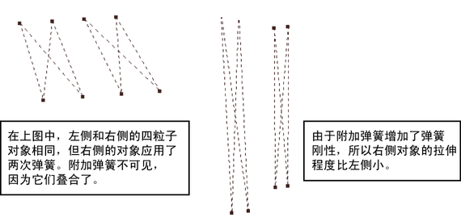

在对象上创建弹簧后，可以添加或移除选定的弹簧以调整弹簧效果。需要在以前没有弹簧的点之间向对象添加更多弹簧时，这非常有用。也可以向同一对点添加两个弹簧以增加刚性。一个刚度较大的弹簧所具有的吸引力不同于刚度设定较小的两个弹簧。

向对象添加更多弹簧
- 选择用于接收附加弹簧的对象或组件。
- 如果尚未选择关联的弹簧对象，按住 Shift 的同时选择该对象。
- 在“弹簧选项”(Spring Option)窗口中，启用“添加到现有弹簧”(Add to Existing Spring)，然后单击“创建”(Create)按钮。
从对象中移除选定弹簧
- 启用“按组件类型选择”(Select by Component Type)中的“线”(Lines)，最好禁用除“弹簧”(Springs)以外的所有线类型。
- 在工作区中，选择要移除的弹簧。
- 按
 （Linux 和 Windows）或
（Linux 和 Windows）或  (Mac OS X) 键。
(Mac OS X) 键。
从对象中移除所有弹簧
- 启用“按对象类型选择”(Select by Object Type)模式，然后在工作区中选择弹簧对象。
请注意不要选择粒子对象或含有弹簧对象的几何体。也可以在“大纲视图”(Outliner)中选择弹簧对象。
- 按 （Linux 和 Windows）或 (Mac OS X) 键。 提示：
如果已为弹簧属性设置动画且不希望丢失动画，则只需移除对象上的所有选定弹簧并添加新的弹簧。新的弹簧将接收以前的属性值。